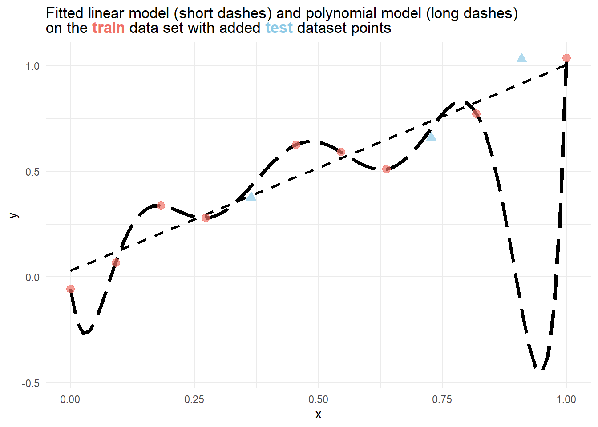

library("tidyverse")
library("tidymodels")2 Linear Models
2.1 Overview
In this exercise session, we will review linear regression and polynomial regression. We will also learn how to efficiently split our data into training and test data, how to perform cross-validation, and why that is important. Before we dive into the details, we will discuss developing statistical models in R.
2.2 Good practices for applied Machine Learning
In previous courses, we mainly focused on fitting a certain model to a given dataset. However, this process could be described as model specification rather than model development. So, what is the difference between specifying and building a model?
2.2.1 Developing a model (What we have done so far!):
The given dataset has been cleaned, transformed, and manipulated using various packages and libraries.
Resampling methods (like the ones we consider today) have been applied, but training the model on each subset or newly generated dataset is usually performed using a for-loop or similar methods. Loops should mostly be avoided in programming languages like R since they can be slow compared to optimized methods specifically written for higher performance.
Similar to applying resampling methods, hyperparameter tuning is usually performed in the same fashion.
In summary, we have only specified the model we want to train and used a somewhat arbitrary and inconsistent approach for everything else.
One of the most significant issues we face, however, is when switching the model. The approach we have been using so far emphasizes working with one selected model that we wish to keep using after data preprocessing.
2.2.2 Developing a model (What we want to do moving forward!):
The main difference between the old and new approaches is leveraging the advantages of the {tidyverse} and {tidymodels} frameworks. These frameworks allow for consistently preprocessing the data, setting model specifications, and performing steps like resampling and hyperparameter tuning simultaneously.
Another huge advantage is that we can swiftly switch between different ML models by following this procedure. For example, applying a random forest algorithm and switching to a neural network approach for the same data is only a matter of changing a few lines of code, as we will see in later exercises.
So, where is the catch? At first, the process might seem complicated or even “overkill” for the models we use. However, as the lecture progresses, our models will also (at least sometimes) become increasingly sophisticated. We want to get used to this new process as early as possible, as it will be useful once we consider more sophisticated models.
The biggest takeaways are:
Consistency: Independent of what the dataset or desired model looks like, we can (almost) always use the same procedure when building a model.
Effectiveness: Once we get used to this new approach, we can develop our models more effectively.
Safety: Developing an ML model has many pitfalls and potholes on the way, and by design,
{tidymodels}helps us to avoid those.
We will introduce and explore some of the concepts above in this session’s exercises and dive deeper in later sessions.
2.3 Introduction to model development with {tidymodels}
This section briefly introduces the most important concepts when working with the {tidymodels} framework.
The data set for this introduction is called “Wine Quality White,” and it contains roughly 5,000 different white wines tested for their physicochemical properties, such as citric acid, pH value, and density. After assessing these properties, experts rated the wine quality and assigned a score between \(0\) and \(10\), where \(0\) is the lowest, and \(10\) is the highest score a wine can achieve.
The data set can be downloaded directly from the UC Irvine Machine Learning Repository or by clicking the button below.
2.3.1 Data Exploration
Since the data set is relatively nice in that we do not have to do much cleaning, we will keep this section relatively short.
Warning: package 'ggtext' was built under R version 4.4.1data_wine <- read.csv("data/winequality-white.csv")
data_wine %>% glimpse()Rows: 4,898
Columns: 12
$ fixed.acidity <dbl> 7.0, 6.3, 8.1, 7.2, 7.2, 8.1, 6.2, 7.0, 6.3, 8.1,…
$ volatile.acidity <dbl> 0.27, 0.30, 0.28, 0.23, 0.23, 0.28, 0.32, 0.27, 0…
$ citric.acid <dbl> 0.36, 0.34, 0.40, 0.32, 0.32, 0.40, 0.16, 0.36, 0…
$ residual.sugar <dbl> 20.70, 1.60, 6.90, 8.50, 8.50, 6.90, 7.00, 20.70,…
$ chlorides <dbl> 0.045, 0.049, 0.050, 0.058, 0.058, 0.050, 0.045, …
$ free.sulfur.dioxide <dbl> 45, 14, 30, 47, 47, 30, 30, 45, 14, 28, 11, 17, 1…
$ total.sulfur.dioxide <dbl> 170, 132, 97, 186, 186, 97, 136, 170, 132, 129, 6…
$ density <dbl> 1.0010, 0.9940, 0.9951, 0.9956, 0.9956, 0.9951, 0…
$ pH <dbl> 3.00, 3.30, 3.26, 3.19, 3.19, 3.26, 3.18, 3.00, 3…
$ sulphates <dbl> 0.45, 0.49, 0.44, 0.40, 0.40, 0.44, 0.47, 0.45, 0…
$ alcohol <dbl> 8.8, 9.5, 10.1, 9.9, 9.9, 10.1, 9.6, 8.8, 9.5, 11…
$ quality <int> 6, 6, 6, 6, 6, 6, 6, 6, 6, 6, 5, 5, 5, 7, 5, 7, 6…Except for the quality variable, every other variable is of type double.
2.3.2 Training a simple linear model
For this example we build a linear model to predict the alcohol content of the wines. Recall the model equation \[\begin{equation} y = \beta_0 + \beta_1 x_1 + ... + \beta_n x_n + \varepsilon, \end{equation}\]
where \(x_1,...,x_n\in\mathbb{R}^k\) denotes \(n\) different features with \(k\) samples, \(\varepsilon \sim \mathcal{N}(0,1)\) a \(k\)-dimensional error term and \(\beta_0,...,\beta_n\) the \(n+1\) model parameters. In our example, \(y\) denotes the variable alcohol, \(k= 4898\), and \(n = 11\).
The {parsnip} packages which is part of {tidymodels} contains the function linear_reg which creates a linear model when called.
lm_mod <- linear_reg()
lm_modLinear Regression Model Specification (regression)
Computational engine: lm Only calling the function name does not help much when trying to model the alcohol contents of the wine, since we haven’t specified the input variables, output variable, and data used for the regression.
To add these, we can use the %>% pipe operator and fit function. As discussed in the previous exercise, the pipe operator passes the output of one operation in the other. Therefore, passing the lm_mod object into the fit function, specifies that the fit function fits a linear model. Fitting in that context refers to estimating the parameters \(\beta_0,...,\beta_n\). Besides the model specification, arguments for the fit function contain the formula which specifies the independent and dependent variables and the data argument which specifies the data that is used for training the model.
The formula in the code cell below specifies that we want to regress alcohol on every other variable indicated by the . after ~. ~ (tilde) is used to separate the left- and right-hand sides in the model formula.
As data we simply pass the whole data_wine data set.
lm_mod <- linear_reg() %>% fit(
formula = alcohol ~.,
data = data_wine
)
lm_modparsnip model object
Call:
stats::lm(formula = alcohol ~ ., data = data)
Coefficients:
(Intercept) fixed.acidity volatile.acidity
6.719e+02 5.099e-01 9.636e-01
citric.acid residual.sugar chlorides
3.658e-01 2.341e-01 -1.832e-01
free.sulfur.dioxide total.sulfur.dioxide density
-3.665e-03 6.579e-04 -6.793e+02
pH sulphates quality
2.383e+00 9.669e-01 6.663e-02 The return value is a parsnip model object that prints the model coefficients \(\beta_0,...,\beta_n\) when called.
Instead of fitting the linear model on all parameters using ., we can also specify the relationship between the independent variables using arithmetic notation:
lm_mod <- linear_reg() %>% fit(
formula = alcohol ~ fixed.acidity+volatile.acidity+citric.acid+
residual.sugar+chlorides+free.sulfur.dioxide+
total.sulfur.dioxide+density+pH+
sulphates+quality,
data = data_wine
)Note, that this notation does not fall under best practices of model development as it is more advisable to create a separate data set for training and fit the model on every variable contained using the . notation.
2.3.3 Evaluating a model
2.3.3.1 Creating a summary of the model parameters
Using the tidy function on the fitted model returns an overview of the model parameters including \(p\)-values and the \(t\)-statistic.
lm_mod %>% tidy()# A tibble: 12 × 5
term estimate std.error statistic p.value
<chr> <dbl> <dbl> <dbl> <dbl>
1 (Intercept) 672. 5.56 121. 0
2 fixed.acidity 0.510 0.00986 51.7 0
3 volatile.acidity 0.964 0.0672 14.3 1.00e-45
4 citric.acid 0.366 0.0560 6.54 6.88e-11
5 residual.sugar 0.234 0.00296 79.1 0
6 chlorides -0.183 0.321 -0.571 5.68e- 1
7 free.sulfur.dioxide -0.00366 0.000494 -7.42 1.33e-13
8 total.sulfur.dioxide 0.000658 0.000222 2.97 3.01e- 3
9 density -679. 5.70 -119. 0
10 pH 2.38 0.0519 45.9 0
11 sulphates 0.967 0.0575 16.8 1.02e-61
12 quality 0.0666 0.00834 7.99 1.70e-15Recall that the statistic column refers to the \(t\)-statistic which corresponds to the following hypotheses for any \(\hat{\beta}_i,\, i=1,...,12\): \[\begin{equation*}
H_0:\, \hat{\beta}_i= 0\qquad \mathrm{vs.}\qquad H_1:\, \hat{\beta}_i \neq 0.
\end{equation*}\] If the \(p\)–value regarding this test is low, we can confidently reject the null hypothesis.
Similar to the tidy function, the summary function can be called on the fit attribute of the model, which also returns a summary which contains a few more details, such as the \(F\)-statistic, \(R^2\), and residual standard error.
lm_mod$fit %>% summary()
Call:
stats::lm(formula = alcohol ~ fixed.acidity + volatile.acidity +
citric.acid + residual.sugar + chlorides + free.sulfur.dioxide +
total.sulfur.dioxide + density + pH + sulphates + quality,
data = data)
Residuals:
Min 1Q Median 3Q Max
-3.3343 -0.2553 -0.0255 0.2214 15.7789
Coefficients:
Estimate Std. Error t value Pr(>|t|)
(Intercept) 6.719e+02 5.563e+00 120.790 < 2e-16 ***
fixed.acidity 5.099e-01 9.855e-03 51.745 < 2e-16 ***
volatile.acidity 9.636e-01 6.718e-02 14.342 < 2e-16 ***
citric.acid 3.658e-01 5.596e-02 6.538 6.88e-11 ***
residual.sugar 2.341e-01 2.960e-03 79.112 < 2e-16 ***
chlorides -1.832e-01 3.207e-01 -0.571 0.56785
free.sulfur.dioxide -3.665e-03 4.936e-04 -7.425 1.33e-13 ***
total.sulfur.dioxide 6.579e-04 2.217e-04 2.968 0.00301 **
density -6.793e+02 5.696e+00 -119.259 < 2e-16 ***
pH 2.383e+00 5.191e-02 45.916 < 2e-16 ***
sulphates 9.669e-01 5.751e-02 16.814 < 2e-16 ***
quality 6.663e-02 8.341e-03 7.988 1.70e-15 ***
---
Signif. codes: 0 '***' 0.001 '**' 0.01 '*' 0.05 '.' 0.1 ' ' 1
Residual standard error: 0.4409 on 4886 degrees of freedom
Multiple R-squared: 0.8719, Adjusted R-squared: 0.8716
F-statistic: 3024 on 11 and 4886 DF, p-value: < 2.2e-16To extract these statistics in tidy fashion, the {yardsticks} library (see Exercise Session 01) can help.
2.3.3.2 Using metric sets and glance
Instead of using the summary function on the fit attribute to extract certain metrics, we can also use the metric_set function. First, define a metric set by passing different metrics such as rsq, rmse, and mae into the metric_set function. Then, pass the predictions of the model into this newly defined metric set which returns the specified metrics.
multi_metric <- metric_set(rsq,rmse,mae)
lm_mod %>%
augment(data_wine) %>%
multi_metric(.pred,alcohol)# A tibble: 3 × 3
.metric .estimator .estimate
<chr> <chr> <dbl>
1 rsq standard 0.872
2 rmse standard 0.440
3 mae standard 0.294A general metric set can be created using the glance function which returns a comprehensive list of metrics for the underlying model.
glance(lm_mod)# A tibble: 1 × 12
r.squared adj.r.squared sigma statistic p.value df logLik AIC BIC
<dbl> <dbl> <dbl> <dbl> <dbl> <dbl> <dbl> <dbl> <dbl>
1 0.872 0.872 0.441 3024. 0 11 -2933. 5892. 5976.
# ℹ 3 more variables: deviance <dbl>, df.residual <int>, nobs <int>2.3.4 Training and test split
Splitting the data into three different subsets, called training, validation, and testing data, is a crucial aspect in Machine Learning.
The basic idea is to train the model on the training data, validate the results on the validation data, and finally test the performance on the testing data that has previously not been observed.
Without this separation the model might become prone to overfitting meaning that the model does not perform well on previously unseen data.
The general procedure for training and testing a model is depicted in the following figure.

Here, the training and validation data set are used in the training procedure and the testing data set in the testing procedure.
Note
The reevaluation during training only makes sense when changing parameters can lead to an improvement. For a simple linear regression this is not the case, since once the model parameters \(\beta_0,...,\beta_n\) are estimated, they are optimal (cf. Gauss-Markov theorem).
A simple training and test split with \(80\%\) training data and \(20\%\) test data can be generated with the initial_split, training, and testing function. Before splitting the data (which is done randomly) we can set a seed. Setting a seed allows us to reproduce the outcome of our code, even when randomness is involved.
set.seed(123)
tt_split<-initial_split(data_wine, 0.8)
data_train <- tt_split %>% training()
data_test <- tt_split %>% testing()Training the linear model on the training data and evaluating it on the test data then yields
lm_mod <- linear_reg() %>%
fit(
formula = alcohol ~.,
data = data_train
)
lm_mod %>%
augment(data_test) %>%
multi_metric(.pred,alcohol)# A tibble: 3 × 3
.metric .estimator .estimate
<chr> <chr> <dbl>
1 rsq standard 0.887
2 rmse standard 0.408
3 mae standard 0.3072.3.5 Cross validation
A popular approach we will use in most exercises extends the procedure described in Figure Figure 2.1 and Figure Figure 2.2. Instead of using a single training and validation data set, we create multiple instances of training and validation data by randomly assigning a data point to the training or validation set. More formally, \(v\)-fold cross validation randomly splits the training and validation data into \(v\) equally sized subsets. In each iteration, one of these subsets is set aside to be the validation data, while the other \(v-1\) subsets are used for training. The figure below depicts how that process works for v = 5.

A part of the whole data set is left as testing data. The blue boxes in the lower part of the figure contain the validation (sub)sets for each split while the training data is contained in the remaining (sub)sets.
2.3.5.1 Creating a cross validation set in R
Cross validation in R can be performed using the {resample} library that is also part of the {tidymodels} framework.
The vfold_cv function creates a nested data frame, meaning that each entry in the data frame contains another data frame. v denotes the number of created folds and data_train specifies that the folds are created from the data_train data set.
set.seed(123)
folds <- vfold_cv(data_train, v = 5)Note, that since the folds are also created stochastically, setting a seed ensures that the results are reproducible. We can access split \(i\) in a fold using the $split attribute and double brackets with the respective index. Note, that each split consists of a training and validation set that can each be accessed using the analysis and assessment function respectively.
folds$splits[[1]] %>%
analysis() %>%
glimpse()Rows: 3,134
Columns: 12
$ fixed.acidity <dbl> 8.3, 7.7, 5.7, 7.2, 9.3, 6.6, 6.6, 9.0, 6.5, 7.2,…
$ volatile.acidity <dbl> 0.25, 0.28, 0.26, 0.24, 0.34, 0.15, 0.17, 0.22, 0…
$ citric.acid <dbl> 0.33, 0.58, 0.24, 0.29, 0.49, 0.32, 0.26, 0.49, 0…
$ residual.sugar <dbl> 2.5, 12.1, 17.8, 2.2, 7.3, 6.0, 7.4, 10.4, 1.4, 5…
$ chlorides <dbl> 0.053, 0.046, 0.059, 0.037, 0.052, 0.033, 0.052, …
$ free.sulfur.dioxide <dbl> 12, 60, 23, 37, 30, 59, 45, 52, 14, 14, 44, 37, 2…
$ total.sulfur.dioxide <dbl> 72, 177, 124, 102, 146, 128, 128, 195, 99, 125, 1…
$ density <dbl> 0.99404, 0.99830, 0.99773, 0.99200, 0.99800, 0.99…
$ pH <dbl> 2.89, 3.08, 3.30, 3.27, 3.17, 3.19, 3.16, 3.31, 3…
$ sulphates <dbl> 0.48, 0.46, 0.50, 0.64, 0.61, 0.71, 0.37, 0.44, 0…
$ alcohol <dbl> 9.5, 8.9, 10.1, 11.0, 10.2, 12.1, 10.0, 10.2, 10.…
$ quality <int> 5, 5, 5, 7, 5, 8, 6, 6, 6, 5, 5, 5, 5, 6, 7, 6, 7…folds$splits[[1]] %>%
assessment() %>%
glimpse()Rows: 784
Columns: 12
$ fixed.acidity <dbl> 6.2, 5.9, 6.7, 6.0, 8.6, 6.9, 8.0, 7.2, 6.7, 5.9,…
$ volatile.acidity <dbl> 0.28, 0.32, 0.18, 0.29, 0.33, 0.21, 0.14, 0.19, 0…
$ citric.acid <dbl> 0.45, 0.39, 0.28, 0.25, 0.34, 0.24, 0.49, 0.31, 0…
$ residual.sugar <dbl> 7.50, 3.30, 10.20, 1.40, 11.80, 1.80, 1.50, 6.30,…
$ chlorides <dbl> 0.045, 0.114, 0.039, 0.033, 0.059, 0.021, 0.035, …
$ free.sulfur.dioxide <dbl> 46, 24, 29, 30, 42, 17, 42, 17, 32, 26, 50, 11, 1…
$ total.sulfur.dioxide <dbl> 203, 140, 115, 114, 240, 80, 120, 103, 111, 114, …
$ density <dbl> 0.99573, 0.99340, 0.99469, 0.98794, 0.99882, 0.98…
$ pH <dbl> 3.26, 3.09, 3.11, 3.08, 3.17, 3.15, 3.26, 3.15, 3…
$ sulphates <dbl> 0.46, 0.45, 0.45, 0.43, 0.52, 0.46, 0.40, 0.52, 0…
$ alcohol <dbl> 9.2, 9.2, 10.9, 13.2, 10.0, 12.3, 10.6, 11.4, 11.…
$ quality <int> 6, 6, 7, 6, 6, 7, 7, 7, 7, 6, 6, 4, 5, 5, 7, 8, 6…2.3.5.2 Training a model using cross validation
To train the linear model on each split, we can use the fit_resamples function. Training the model on each fold is the as simple as training he model without resamples: We simply pass the model specification, formula, and additionally the cross validation object into the fit_resamples formula. Additionally, we can also pass the metric set multi_metric to specify which metrics we want to use for model evaluation.
lm_mod_resampling <- linear_reg()
lm_mod_resampling_res <- fit_resamples(lm_mod_resampling,
alcohol ~.,
folds,
metrics = multi_metric)The return value of the fit_resamples function is a data frame containing \(5\) linear models (since we specified v=5 when creating the folds object).
lm_mod_resampling_res# Resampling results
# 5-fold cross-validation
# A tibble: 5 × 4
splits id .metrics .notes
<list> <chr> <list> <list>
1 <split [3134/784]> Fold1 <tibble [3 × 4]> <tibble [0 × 3]>
2 <split [3134/784]> Fold2 <tibble [3 × 4]> <tibble [0 × 3]>
3 <split [3134/784]> Fold3 <tibble [3 × 4]> <tibble [0 × 3]>
4 <split [3135/783]> Fold4 <tibble [3 × 4]> <tibble [0 × 3]>
5 <split [3135/783]> Fold5 <tibble [3 × 4]> <tibble [0 × 3]>We are mainly interested in the cross validation error (CV-RMSE) defined as
\[\begin{equation*} \mathrm{CV-RMSE} = \frac{1}{v}\sum_{i=1}^v \mathrm{RMSE}_i, \end{equation*}\]
where \(\mathrm{RMSE}_i\) stands for the RMSE of the \(i\)-th. hold-out sample.
We can collect this metric by applying the collect_metrics function:
lm_mod_resampling_res %>% collect_metrics()# A tibble: 3 × 6
.metric .estimator mean n std_err .config
<chr> <chr> <dbl> <int> <dbl> <chr>
1 mae standard 0.300 5 0.00460 Preprocessor1_Model1
2 rmse standard 0.451 5 0.0710 Preprocessor1_Model1
3 rsq standard 0.866 5 0.0414 Preprocessor1_Model1The third column mean depicts the mean rmse and rsq across all the splits. Comparing the CV-RMSE (\(0.451\)) to the true out of sample (OOS) RMSE of the test set (\(0.408\)) reveals that the performance of the linear model seems stable, meaning that it is not prone to overfitting. Furthermore, the CV-RMSE seems to overestimate the true OOS RMSE, since \(0.451>0.408\). Using this information we can make prediction about the alcohol contents of a wine with the estimated model parameters on the training data set.
2.3.6 Polynomial regression and the bias variance trade off
Polynomial regression is a special case of multiple linear regression where the model is still linear in its coefficients but the dependent variable \(y\) is modeled as polynomial in \(x\). For an \(n\)-th degree polynomial model the model equation is therefore given by
\[\begin{equation*} y = \beta_0 + \beta_1 x + \beta_2 x^2 + ... + \beta_n x^n. \end{equation*}\]
Note
For this specific model we only use one independent variable \(x\) instead of \(n\) different independent variables \(x_1\),…,\(x_n\).
Say, we want to model the alcohol contents of wine with a MLR model using the wine density as the only predictor.
Consider the following synthetic dataset consisting of \(12\) observations.
set.seed(123)
data_synth <- tibble(
x = seq(0,1,1/11),
y = x+rnorm(12,0,0.1)
)
split_synth <- initial_split(data_synth,0.8)
data_train_synth <- split_synth %>% training()
data_test_synth <- split_synth %>% testing()
data_synth# A tibble: 12 × 2
x y
<dbl> <dbl>
1 0 -0.0560
2 0.0909 0.0679
3 0.182 0.338
4 0.273 0.280
5 0.364 0.377
6 0.455 0.626
7 0.545 0.592
8 0.636 0.510
9 0.727 0.659
10 0.818 0.774
11 0.909 1.03
12 1 1.04 From the figure below, it is immediately evident, that a polynomial model perfectly fits the training data, but severely fails to estimate the rightmost point of the testing data. While the linear model does not fit the training data

To verify this, we can also compare the training and test error for different metrics of each model.
lm_poly_mod <- linear_reg() %>%
fit(formula = y ~ poly(x, 8),
data = data_train_synth
)
lm_lin_mod <- linear_reg() %>%
fit(formula = y ~ x,
data = data_train_synth
)Visualizing the difference in train and test error then yields

The example above demonstrates the phenomenon of bias-variance tradeoff. A low variance and high bias can be observed in the linear model, since there are only few (two) model parameters and a small discrepancy between training and test error. The polynomial model exhibits a large discrepancy between training and test error and since there are many (nine) parameters, indicating that it has a high variance but low bias.
2.4 Exercises
Throughout the exercises, we will work with a subset of the Apartment rental offers in Germany data set that can be downloaded using the button below. It contains 239 unique rental listings for flats in Augsburg which were sourced at three different dates in 2018 and 2019 and contains 28 different variables.
Exercise 2.1 Instead of focusing on a comprehensive data cleaning and manipulation process, we will simply use the two variables livingSpace measuring the area of living in \(m^2\) of a listing and baseRent in EUR, representing the monthly base rent.
Import the data and visualize the relationship between the two variables livingSpace and baseRent with a scatter plot. Rename the axis of the plot such that they display the words base rent and living space (seperated by a whitespace).
Exercise 2.2 Without conducting a thorough outlier analysis, remove every listing that either costs more than \(2500\) EUR or is bigger than \(200\: m^2\).
Exercise 2.3 Create a training (\(80\%\)) and test data set using the filtered data. Use set.seed(2) to generate reproducible results.
Exercise 2.4 Train a simple linear model on the training data.
Exercise 2.5 Generate a model summary and interpret the coefficients. Is the independent variable statistically significant?
Exercise 2.6 Evaluate the model on the test data by considering the adjusted \(R^2\) and MAE. On average, how far off is the estimated base rent?
Exercise 2.7 Create a \(10\)-fold cross validation split of the training data using the same seed as before and retrain the simple linear model. Compare the cross validation MAE to the OOS MAE and interpret the result.
Exercise 2.8 Repeat Exercises Exercise 2.6 and Exercise 2.8 for a polynomial model of degree 20. Compare the test and cross-validation MAE of the linear model with the polynomial model.
Exercise 2.9 Create a scatter plot of the training data and insert both fitted curves using the geom_smooth function.
Exercise 2.10 Assume we have fitted a simple linear model \[\begin{equation*} \hat{y} = \hat{\beta_0}+\hat{\beta_1}x. \end{equation*}\]
For \(\hat\beta_1\) the \(t\)-statistic has a \(p\)-value of \(1e-16\) (\(=1\cdot 10^{-16}\)). Describe the null hypothesis of the underlying test and explain what concnulision can be drawn based on this \(p\)-value.
Exercise 2.11 Assume we have a data set with \(k = 400\) containing a single independent variable \(x\) and a real valued dependent variable \(y\). We fit a simple regression model and a polynomial regression with degree \(5\) on \(75\%\) of the data and leave the remaining \(25\%\) for testing .
Assume that the true relationship between \(x\) and \(y\) is linear. Consider the training RMSE for the linear regression, and also the training RMSE for the polynomial regression. Choose the most appropriate answer and justify your choice.
1.1 The polynomial model has more flexibility due to the additional terms, so it will fit the data better than the linear model, resulting in a lower training RMSE.
1.2 The linear model is simpler and less prone to overfitting, so it will produce a lower training RMSE compared to the polynomial model.
1.3 Since both models are trying to explain the same data, their training RMSE should be approximately the same.
1.4 Without knowing the true underlying relationship between the predictor and response, we cannot definitively predict the behavior of the training RMSE for either model.
Repeat the previous exercise but instead of the training RMSE, consider the test RMSE.
2.5 Solutions
Solution 2.1 (Exercise 2.1). The data set can be imported using the read_csv function.
data_aux <- read_csv("data/rent_aux.csv")Using the ggplot function, we can create a simple scatter plot. The labs function allows to define new axis labels by specifying the axis and assigning the names to the respective axis. \(x\) corresponds to the horizontal axis and \(y\) to the vertical axis.
data_aux %>%
ggplot(aes(x = livingSpace, y = baseRent)) +
geom_point() +
labs(
x = "living space",
y = "base rent"
)Solution 2.2 (Exercise 2.2). To select all listings with base rent lower than \(2500\) EUR and living space less than \(200\) sqm, we can use the filter function and overwrite the old data set.
data_aux <- data_aux %>%
filter(baseRent <= 2500, livingSpace <= 200)Solution 2.3 (Exercise 2.3). By setting set.seed(2) we can make sure that the following results are reproducible. Similar to Section 2.3.4, we can define a split object using the initial_split function and select the training and test portion using the training and testing functions respectively.
set.seed(2)
split <-initial_split(data_aux,0.8)
data_train <- split %>% training(split)
data_test <- split %>% testing(split)Solution 2.4 (Exercise 2.4).
lm_mod <- linear_reg() %>%
fit(baseRent ~ livingSpace, data_train)Solution 2.5 (Exercise 2.5). A simple model summary can be created by passing the trained model into the tidy function.
lm_mod %>% tidy()# A tibble: 2 × 5
term estimate std.error statistic p.value
<chr> <dbl> <dbl> <dbl> <dbl>
1 (Intercept) 87.3 25.2 3.46 6.58e- 4
2 livingSpace 10.4 0.322 32.2 5.49e-79The estimated parameter \(\hat{\beta_1} = 10.4\) indicates that according to the linear model, we expect the base rent to rise \(10.4\) EUR for every additional square meter of living space.
Solution 2.6 (Exercise 2.6). We can calculate the adjusted \(R^2\) and \(MAE\) using the metric_set function.
multi_metric<- metric_set(rsq,mae)
lm_mod %>%
augment(data_test) %>%
multi_metric(.pred,baseRent)# A tibble: 2 × 3
.metric .estimator .estimate
<chr> <chr> <dbl>
1 rsq standard 0.883
2 mae standard 108. MAE\(=108\) indicates that on average our estimated base rent is off by \(108\) EUR.
Solution 2.8 (Exercise 2.8).
set.seed(2)
folds <- vfold_cv(data_train)
lm_mod_resampling_res <- linear_reg() %>%
fit_resamples(baseRent ~ livingSpace,
folds,
metrics = multi_metric)
lm_mod_resampling_res %>% collect_metrics()# A tibble: 2 × 6
.metric .estimator mean n std_err .config
<chr> <chr> <dbl> <int> <dbl> <chr>
1 mae standard 116. 10 5.12 Preprocessor1_Model1
2 rsq standard 0.869 10 0.0153 Preprocessor1_Model1The cross-validation MAE of \(116\) EUR compared to the test MAE of \(108\) EUR indicates that the cross-validation error is overestimating the true test error. This is in fact favorable, since it is preferable to have a pessimistic bias towards an estimated error. In other words, overestimating an error is always better than underestimating an error.
Solution 2.8 (Exercise 2.8).
lm_poly_mod <- linear_reg() %>% fit(
formula = baseRent ~ poly(livingSpace, 20),
data = data_train
)
lm_poly_mod %>%
augment(data_test) %>%
multi_metric(.pred,baseRent)# A tibble: 2 × 3
.metric .estimator .estimate
<chr> <chr> <dbl>
1 rsq standard 0.349
2 mae standard 153. lm_poly_mod_resampling_res <- linear_reg() %>%
fit_resamples(baseRent ~ poly(livingSpace,20),
folds,
metrics = multi_metric)
lm_poly_mod_resampling_res %>% collect_metrics()# A tibble: 2 × 6
.metric .estimator mean n std_err .config
<chr> <chr> <dbl> <int> <dbl> <chr>
1 mae standard 1541. 10 1205. Preprocessor1_Model1
2 rsq standard 0.624 10 0.0937 Preprocessor1_Model1Compared to the simple linear model, the polynomial model performs a lot worse on the test data as it severely ovefits on the training data. The CV MAE of \(1541\) compared to the test MAE of \(153\) is another redflag we should consider when evaluating model performance.
Solution 2.9 (Exercise 2.9). We can directly pipe the training data data_train into the ggplot function to create the plot. The color argument in the geom_point function changes the color of the points and the size argument toggles the point sizes in the figure. When using geom_smooth have to express the formula in terms of x and y instead of using livingSpace and baseRent. Setting se=FALSE removes the confidence band of the estimated lines. color = "black", linetype=2, and linewidth=1.5 specifies the visual characteristics of the line. As with the previous plot, we can also change the axis labels using labs.
data_train %>% ggplot(aes(x=livingSpace,y=baseRent))+
geom_point(color="#f07167",
size = 2)+
geom_smooth(formula = y ~ poly(x, 20),
method = "lm",
color = "black",
se = FALSE,
linetype= 2,
linewidth = 1.5)+
geom_smooth(formula = y ~ x,
method = "lm",
color = "black",
se = FALSE,
linetype= 5,
linewidth = 1.5)+
labs(x="Living space in sqm",
y="base rent in EUR")+
theme_minimal()Solution 2.10 (Exercise 2.10). A \(p\)-value of \(1e-16\) (\(=1\cdot 10^{-16}\)) indicates that we can reject the null hypotheses \(H_0: \beta_1 = 0\) to the significance level \(1-(10^{-16})\).
Solution 2.11 (Exercise 2.11).
Since the polynomial model has more flexibility due to the additional terms, it will likely fit the training data better than the linear model, resulting in a lower training RMSE.
The linear model is simpler and less prone to overfitting, so it will likely produce a lower test RMSE compared to the polynomial model.
2.6 Session Info
sessionInfo()R version 4.4.0 (2024-04-24 ucrt)
Platform: x86_64-w64-mingw32/x64
Running under: Windows 11 x64 (build 22631)
Matrix products: default
locale:
[1] LC_COLLATE=English_United States.utf8
[2] LC_CTYPE=English_United States.utf8
[3] LC_MONETARY=English_United States.utf8
[4] LC_NUMERIC=C
[5] LC_TIME=English_United States.utf8
time zone: Europe/Berlin
tzcode source: internal
attached base packages:
[1] stats graphics grDevices utils datasets methods base
other attached packages:
[1] ggtext_0.1.2 yardstick_1.3.1 workflowsets_1.1.0 workflows_1.1.4
[5] tune_1.2.1 rsample_1.2.1 recipes_1.0.10 parsnip_1.2.1
[9] modeldata_1.3.0 infer_1.0.7 dials_1.2.1 scales_1.3.0
[13] broom_1.0.5 tidymodels_1.2.0 lubridate_1.9.3 forcats_1.0.0
[17] stringr_1.5.1 dplyr_1.1.4 purrr_1.0.2 readr_2.1.5
[21] tidyr_1.3.1 tibble_3.2.1 ggplot2_3.5.1 tidyverse_2.0.0
loaded via a namespace (and not attached):
[1] rlang_1.1.3 magrittr_2.0.3 furrr_0.3.1
[4] compiler_4.4.0 mgcv_1.9-1 vctrs_0.6.5
[7] lhs_1.1.6 pkgconfig_2.0.3 crayon_1.5.2
[10] fastmap_1.1.1 backports_1.4.1 labeling_0.4.3
[13] utf8_1.2.4 rmarkdown_2.26 prodlim_2023.08.28
[16] markdown_1.12 tzdb_0.4.0 bit_4.0.5
[19] xfun_0.43 jsonlite_1.8.8 parallel_4.4.0
[22] R6_2.5.1 stringi_1.8.4 parallelly_1.37.1
[25] rpart_4.1.23 Rcpp_1.0.12 iterators_1.0.14
[28] knitr_1.46 future.apply_1.11.2 Matrix_1.7-0
[31] splines_4.4.0 nnet_7.3-19 timechange_0.3.0
[34] tidyselect_1.2.1 rstudioapi_0.16.0 yaml_2.3.8
[37] timeDate_4032.109 codetools_0.2-20 listenv_0.9.1
[40] lattice_0.22-6 withr_3.0.0 evaluate_0.23
[43] future_1.33.2 survival_3.5-8 xml2_1.3.6
[46] pillar_1.9.0 foreach_1.5.2 generics_0.1.3
[49] vroom_1.6.5 hms_1.1.3 munsell_0.5.1
[52] commonmark_1.9.1 globals_0.16.3 class_7.3-22
[55] glue_1.7.0 tools_4.4.0 data.table_1.15.4
[58] modelenv_0.1.1 gower_1.0.1 grid_4.4.0
[61] ipred_0.9-14 colorspace_2.1-0 nlme_3.1-164
[64] cli_3.6.2 DiceDesign_1.10 fansi_1.0.6
[67] lava_1.8.0 gtable_0.3.5 GPfit_1.0-8
[70] digest_0.6.35 htmlwidgets_1.6.4 farver_2.1.1
[73] htmltools_0.5.8.1 lifecycle_1.0.4 hardhat_1.3.1
[76] gridtext_0.1.5 bit64_4.0.5 MASS_7.3-60.2